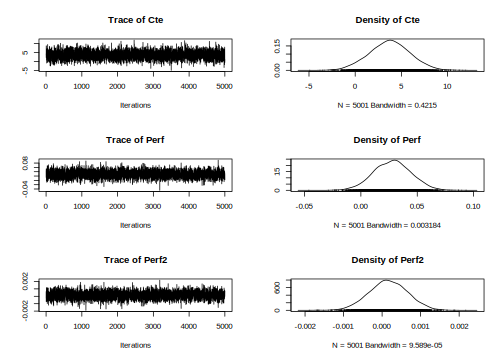
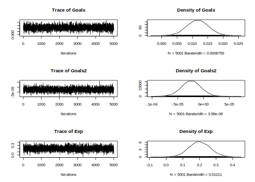
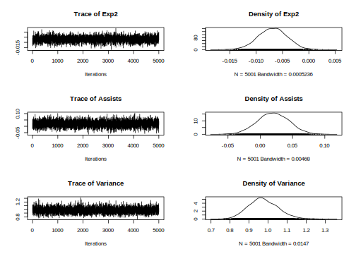
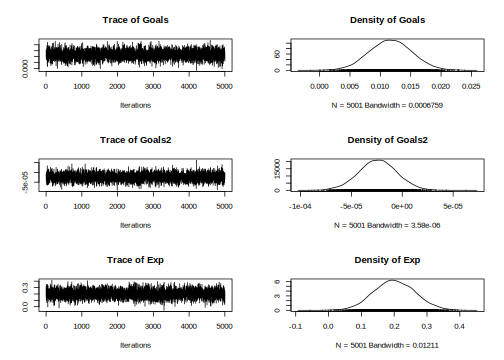
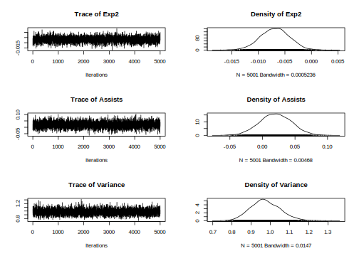
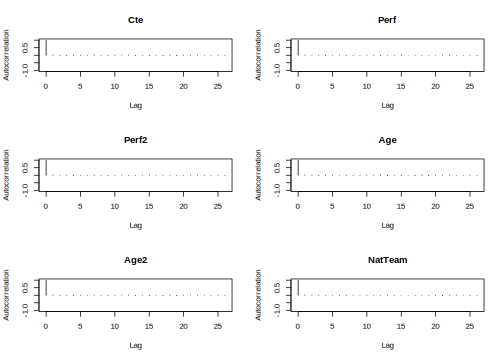
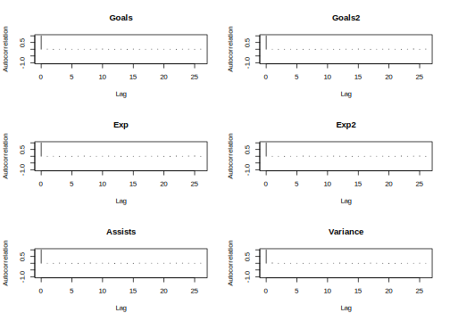

6.1 Normal model
The Gaussian linear model specifies \({\bf{y}}={\bf{X}}\beta+\bf{\mu}\) such that \(\bf{\mu}\sim N(\bf{0},\sigma^2\bf{I}_N)\) is an stochastic error, \({\bf{X}}\) is a \(N \times K\) matrix of regressors, \(\beta\) is a \(K\)-dimensional vector of coefficients, \({\bf{y}}\) is an \(N\)-dimensional vector of a dependent variable, and \(N\) is the number of units.
The conjugate independent priors for the parameters are \(\beta \sim N(\beta_0, {\bf{B}}_0)\) and \(\sigma^2 \sim IG(\alpha_0/2, \delta_0/2)\). Given the likelihood function, \(p(\beta, \sigma^2|{\bf{y}}, {\bf{X}}) = (2\pi\sigma^2)^{-\frac{N}{2}} \exp \left\{-\frac{1}{2\sigma^2} ({\bf{y}} - \bf{X\beta})^{\top}({\bf{y}} - \bf{X\beta}) \right\}\), the conditional posterior distributions are
\[\begin{align} \beta|\sigma^2, {\bf{y}}, {\bf{X}} \sim N(\beta_n, \sigma^2{\bf{B}}_n), \end{align}\] and \[\begin{align} \sigma^2|\beta, {\bf{y}}, {\bf{X}} \sim IG(\alpha_n/2, \delta_n/2), \end{align}\]
where \({\bf{B}}_n = ({\bf{B}}_0^{-1} + \sigma^{-2} {\bf{X}}^{\top}{\bf{X}})^{-1}\), \(\beta_n= {\bf{B}}_n({\bf{B}}_0^{-1}\beta_0 + \sigma^{-2} {\bf{X}}^{\top}{\bf{y}})\), \(\alpha_n = \alpha_0 + N\) and \(\delta_n = \delta_0 + ({\bf{y}}-{\bf{X}}\beta)^{\top}({\bf{y}}-{\bf{X}}\beta)\).
We can employ the Gibbs sampler in this model due to having standard conditional posterior distributions.
Application: The market value of soccer players in Europe
Let’s analyze the determinants of the market value of soccer players. In particular, we use the dataset 1ValueFootballPlayers.csv which is in folder DataApp (see Table 13.3 for details) in our github repository (https://github.com/besmarter/BSTApp). This dataset was used by (Serna Rodríguez, Ramírez Hassan, and Coad 2019) to finding the determinants of high performance soccer players in the five most important national leagues in Europe.
The specification of the model is
\[\begin{align} \log(\text{Value}_i)&=\beta_1+\beta_2\text{Perf}_i+\beta_3\text{Perf}^2_i+\beta_4\text{Age}_i+\beta_5\text{Age}^2_i+\beta_6\text{NatTeam}_i+\beta_7\text{Goals}_i\\ &+\beta_8\text{Goals}^2_i+\beta_9\text{Exp}_i+\beta_{10}\text{Exp}^2_i+\beta_{11}\text{Assists}_i, \end{align}\]
where Value is the market value in Euros (2017), Perf is a measure of performance, Age is the players’ age in years, NatTem is an indicator variable that takes the value of 1 if the player has been on the national team, Goals is the number of goals scored by the player during his career, Exp is his experience in years, and Assists is the number of assist made by the player in the 2015–2016 season.
We assume that the dependent variable distributes normal, then we use a normal-inverse gamma model using vague conjugate priors where \({\bf{B}}_0=1000{\bf{I}}_{10}\), \(\beta_0={\bf{0}}_{10}\), \(\alpha_0=0.001\) and \(\delta_0=0.001\). We perform a Gibbs sampler with 10,000 MCMC iterations plus a burn-in equal to 5,000, and a thinning parameter equal to 1.
set.seed(010101) # Set a seed for replicability of results
# Download data from github
# urlfile <- 'https://raw.githubusercontent.com/besmarter/BSTApp/master/DataApp/1ValueFootballPlayers.csv'
# mydata <- read.csv(urlfile)
mydata <- read.csv("DataApplications/1ValueFootballPlayers.csv", header = T, sep = ",")
attach(mydata)
str(mydata)## 'data.frame': 335 obs. of 13 variables:
## $ Player : Factor w/ 335 levels "Aaron Cresswell",..: 194 13 72 254 162 211 76 287 165 316 ...
## $ Value : int 22000000 7500000 18000000 15000000 18000000 25000000 40000000 30000000 55000000 9000000 ...
## $ ValueCens: int 22000000 7500000 18000000 15000000 18000000 25000000 40000000 30000000 55000000 9000000 ...
## $ Perf : int 7 9 33 6 34 25 31 12 35 29 ...
## $ Perf2 : int 49 81 1089 36 1156 625 961 144 1225 841 ...
## $ Age : int 24 27 23 24 30 22 31 26 25 29 ...
## $ Age2 : int 576 729 529 576 900 484 961 676 625 841 ...
## $ NatTeam : int 1 1 1 1 1 1 1 1 1 0 ...
## $ Goals : int 0 27 27 34 0 18 26 8 28 43 ...
## $ Goals2 : int 0 729 729 1156 0 324 676 64 784 1849 ...
## $ Exp : num 10.01 16.01 7.01 8.01 12.01 ...
## $ Exp2 : num 100.2 256.4 49.1 64.1 144.2 ...
## $ Assists : int 0 0 4 1 0 0 1 0 5 7 ...y <- log(Value) # Dependent variable
X <- cbind(1,as.matrix(mydata[, 4:13])) # Regressors
N <- dim(X)[1] # Sample size
K <- dim(X)[2] # Number of regressors including a constant
# Hyperparameters
B0 <- 1000*diag(K) # Prior covariance matrix Normal distribution
B0i <- solve(B0) # Prior precision matrix Normal distribution
b0 <- rep(0,K) # Prior mean Normal distribution
a0 <- 0.001 # Prior shape parameter inverse-gamma distribution
d0 <- 0.001 # Prior rate parameter inverse-gamma distribution
# MCMC parameters
it <- 10000 # Iterations after burn-in
burn <- 5000 # Burn-in
tot <- burn + it # Total iterations
###### 1. Programming the Gibbs sampler #######
# Space and initial setting
betaGibbs <- matrix(0,tot,K) # Space for posterior beta
varGibbs <- matrix(1,tot,1) # Space for posterior sigma^2
sigma2_0 <- 2 # Initial sigma^2
Bn <- solve(B0i+sigma2_0^{-1}*t(X)%*%X) # Initial covariance matrix beta
bn <- Bn%*%(B0i%*%b0+sigma2_0^{-1}*t(X)%*%y) # Initial mean beta
an <- a0+N # Posterior alpha
for(i in 1:tot){
BetaG <- MASS::mvrnorm(1, mu=bn, Sigma=Bn) # Draw of posterior beta
dn <- d0+t(y-X%*%BetaG)%*%(y-X%*%BetaG) # Posterior delta
sigma2 <- pscl::rigamma(1,an/2,dn/2) # Draw of posterior variance
Bn <- solve(B0i+sigma2^{-1}*t(X)%*%X) # Posterior covariance beta
bn <- Bn%*%(B0i%*%b0+sigma2^{-1}*t(X)%*%y) # Posterior mean beta
betaGibbs[i,] <- BetaG
varGibbs[i,] <- sigma2
}
# Draws after burn-in
PostPar <- coda::mcmc(cbind(betaGibbs[burn:it,], varGibbs[burn:it,]))
# Names
colnames(PostPar) <- c("Cte", names(mydata)[-c(1:3)], "Variance")
# Summary posterior draws
summary(PostPar) ##
## Iterations = 1:5001
## Thinning interval = 1
## Number of chains = 1
## Sample size per chain = 5001
##
## 1. Empirical mean and standard deviation for each variable,
## plus standard error of the mean:
##
## Mean SD Naive SE Time-series SE
## Cte 3.719e+00 2.202e+00 3.114e-02 3.188e-02
## Perf 2.798e-02 1.650e-02 2.333e-04 2.333e-04
## Perf2 1.604e-04 4.977e-04 7.038e-06 7.206e-06
## Age 7.744e-01 1.794e-01 2.536e-03 2.593e-03
## Age2 -1.646e-02 3.348e-03 4.734e-05 4.845e-05
## NatTeam 8.492e-01 1.178e-01 1.666e-03 1.704e-03
## Goals 1.169e-02 3.503e-03 4.953e-05 4.953e-05
## Goals2 -2.408e-05 1.874e-05 2.649e-07 2.649e-07
## Exp 2.011e-01 6.277e-02 8.876e-04 8.876e-04
## Exp2 -6.878e-03 2.713e-03 3.837e-05 3.837e-05
## Assists 2.012e-02 2.425e-02 3.430e-04 3.430e-04
## Variance 9.745e-01 7.619e-02 1.077e-03 1.112e-03
##
## 2. Quantiles for each variable:
##
## 2.5% 25% 50% 75% 97.5%
## Cte -6.444e-01 2.243e+00 3.7431200 5.170e+00 7.978e+00
## Perf -4.207e-03 1.661e-02 0.0281211 3.902e-02 6.023e-02
## Perf2 -8.097e-04 -1.724e-04 0.0001627 4.935e-04 1.124e-03
## Age 4.227e-01 6.544e-01 0.7723884 8.947e-01 1.131e+00
## Age2 -2.297e-02 -1.871e-02 -0.0163819 -1.419e-02 -9.984e-03
## NatTeam 6.217e-01 7.699e-01 0.8492834 9.300e-01 1.081e+00
## Goals 4.769e-03 9.315e-03 0.0116816 1.406e-02 1.857e-02
## Goals2 -6.188e-05 -3.643e-05 -0.0000240 -1.157e-05 1.272e-05
## Exp 8.013e-02 1.586e-01 0.1997035 2.441e-01 3.249e-01
## Exp2 -1.224e-02 -8.727e-03 -0.0068425 -5.056e-03 -1.714e-03
## Assists -2.716e-02 3.785e-03 0.0202098 3.698e-02 6.760e-02
## Variance 8.347e-01 9.219e-01 0.9701447 1.026e+00 1.132e+00 


##
## Fraction in 1st window = 0.1
## Fraction in 2nd window = 0.5
##
## Cte Perf Perf2 Age Age2 NatTeam Goals Goals2
## -0.79112 1.45439 -1.50703 0.46945 -0.24099 -0.07577 -0.68005 0.51859
## Exp Exp2 Assists Variance
## 0.67734 -0.99537 -0.10185 0.78761##
## Quantile (q) = 0.5
## Accuracy (r) = +/- 0.025
## Probability (s) = 0.95
##
## Burn-in Total Lower bound Dependence
## (M) (N) (Nmin) factor (I)
## Cte 2 1574 1537 1.020
## Perf 2 1478 1537 0.962
## Perf2 2 1570 1537 1.020
## Age 1 1541 1537 1.000
## Age2 2 1560 1537 1.010
## NatTeam 2 1588 1537 1.030
## Goals 2 1590 1537 1.030
## Goals2 1 1538 1537 1.000
## Exp 2 1555 1537 1.010
## Exp2 1 1542 1537 1.000
## Assists 2 1583 1537 1.030
## Variance 2 1589 1537 1.030##
## Stationarity start p-value
## test iteration
## Cte passed 1 0.7888
## Perf failed NA 0.0174
## Perf2 passed 502 0.0584
## Age passed 1 0.6905
## Age2 passed 1 0.6479
## NatTeam passed 1 0.9541
## Goals passed 1 0.3700
## Goals2 passed 1 0.6803
## Exp passed 1 0.2319
## Exp2 passed 1 0.1838
## Assists passed 1 0.2814
## Variance passed 1 0.7429
##
## Halfwidth Mean Halfwidth
## test
## Cte passed 3.72e+00 6.25e-02
## Perf <NA> NA NA
## Perf2 passed 1.63e-04 1.49e-05
## Age passed 7.74e-01 5.08e-03
## Age2 passed -1.65e-02 9.50e-05
## NatTeam passed 8.49e-01 3.34e-03
## Goals passed 1.17e-02 9.71e-05
## Goals2 passed -2.41e-05 5.19e-07
## Exp passed 2.01e-01 1.74e-03
## Exp2 passed -6.88e-03 7.52e-05
## Assists passed 2.01e-02 6.72e-04
## Variance passed 9.75e-01 2.18e-03###### 2. Using a library: MCMCpack #######
Reg <- MCMCpack::MCMCregress(y~X-1, burnin = burn, mcmc = it, b0 = b0, B0 = B0i, c0 = a0, d0 = d0)
summary(Reg)##
## Iterations = 5001:15000
## Thinning interval = 1
## Number of chains = 1
## Sample size per chain = 10000
##
## 1. Empirical mean and standard deviation for each variable,
## plus standard error of the mean:
##
## Mean SD Naive SE Time-series SE
## X 3.711e+00 2.230e+00 2.230e-02 2.230e-02
## XPerf 2.784e-02 1.643e-02 1.643e-04 1.643e-04
## XPerf2 1.629e-04 4.938e-04 4.938e-06 4.938e-06
## XAge 7.754e-01 1.816e-01 1.816e-03 1.816e-03
## XAge2 -1.648e-02 3.383e-03 3.383e-05 3.383e-05
## XNatTeam 8.500e-01 1.181e-01 1.181e-03 1.201e-03
## XGoals 1.175e-02 3.468e-03 3.468e-05 3.468e-05
## XGoals2 -2.447e-05 1.865e-05 1.865e-07 1.865e-07
## XExp 2.005e-01 6.295e-02 6.295e-04 6.295e-04
## XExp2 -6.830e-03 2.726e-03 2.726e-05 2.726e-05
## XAssists 2.015e-02 2.468e-02 2.468e-04 2.468e-04
## sigma2 9.739e-01 7.696e-02 7.696e-04 7.967e-04
##
## 2. Quantiles for each variable:
##
## 2.5% 25% 50% 75% 97.5%
## X -6.129e-01 2.178e+00 3.692e+00 5.207e+00 8.100e+00
## XPerf -4.408e-03 1.660e-02 2.793e-02 3.887e-02 6.027e-02
## XPerf2 -8.052e-04 -1.739e-04 1.604e-04 4.941e-04 1.133e-03
## XAge 4.167e-01 6.533e-01 7.756e-01 9.001e-01 1.125e+00
## XAge2 -2.301e-02 -1.882e-02 -1.649e-02 -1.419e-02 -9.842e-03
## XNatTeam 6.136e-01 7.718e-01 8.502e-01 9.299e-01 1.082e+00
## XGoals 4.959e-03 9.401e-03 1.174e-02 1.411e-02 1.859e-02
## XGoals2 -6.116e-05 -3.724e-05 -2.418e-05 -1.179e-05 1.182e-05
## XExp 7.644e-02 1.580e-01 1.996e-01 2.435e-01 3.234e-01
## XExp2 -1.228e-02 -8.685e-03 -6.820e-03 -4.986e-03 -1.469e-03
## XAssists -2.828e-02 3.625e-03 2.019e-02 3.677e-02 6.964e-02
## sigma2 8.316e-01 9.201e-01 9.703e-01 1.023e+00 1.134e+00When using our GUI (third approach), the first step is to type shiny::runGitHub(“besmarter/BSTApp” , launch.browser=T) in the R package console or any R code editor to run our GUI,1 and then select Univariate Models on the top panel. The radio button on the left hand side shows the specific models inside this generic class. Users should select Normal model (see Figure 6.1).

Figure 6.1: Univariate models: Normal/normal-inverse gamma model.
The right hand side panel displays a widget to upload the input dataset, which should be a csv file with headers in the first row. Users also should select the kind of separator used in the input file: comma, semicolon, or tab (use the folders DataSim and DataApp for the input file templates). Once users upload the dataset, they can see a data preview. Range sliders help to set the number of iterations of the MCMC and the amount of burn-in, and the thinning parameter can be selected as well. After this, users should specify the equation. This can be done with the formula builder, where users can select the dependent variable, and the independent variables, and then click on the “Build formula” tab. Users can see in the “Main Equation” space the formula expressed in the format used by R. See Main equation box in Figure 6.2, observe that in this case the depedent variable is \(\log\text{Value}\) rather than \(\text{Value}\), then we should modify directly the Main equation box writing \(log(Value)\). In general, users can modify this box if necessary, for instance, including higher order or interaction terms, other transformation are also allowed. This is done directly in the “Main Equation” space taking into account that this extra terms should follow formula command structure (see https://www.rdocumentation.org/packages/stats/versions/3.6.2/topics/formula). Note that the class of univariate models includes the intercept by default, except ordered probit, where the specification has to do this explicitly, that is, ordered probit models do not admit an intercept for identification issues (see below). Finally, users should define the hyperparameters of the prior; for instance, in the normal-inverse gamma model, these are the mean, covariance, shape, and scale (see Figure 6.2). However, users should take into account that our GUI has "non-informative’’ hyperparameters by default in all our modelling frameworks, so the last part is not a requirement.

Figure 6.2: Normal/normal-inverse gamma model: Formula builder and hyperparameters.
After this specification process, users should click the Go! button to initiate the estimation. Our GUI displays the summary statistics and convergence diagnostics after this process is finished (see Figure 6.3). There are also widgets to download posterior chains (csv file) and graphs (pdf and eps files). Note that the order of the coefficients in the results (summary, posterior chains, and graphs) is first for the location parameters, and then for the scale parameters.

Figure 6.3: Normal/normal-inverse gamma model: Results.
As expected, the results using the three approach (programming, library and GUI) are very similar. These suggest that age, squared age, national team, goals, experience, and squared experience are relevant regressors. For instance, we found that the 2.5% and 97.5% percentiles of the posterior estimate associated with the variable Goals are 4.57e-03 and 1.82e-02. These values can be used to find the 95% symmetric credible interval. This means that there is a 0.95 probability that the population parameter lies in (4.57e-03, 1.82e-02), which would suggest that this variable is relevant to explain the market value of a soccer player.2 We also found that the effect of having been on the national team has a 95% credible interval equal to (0.58, 1.04) with a median equal to 0.81, that is, an increase of the market value of the player of 124.8% (\(\exp(0.81)-1\)) compared with a player that has not ever been on a national team. The posterior distribution of this variable can be seen in Figure 6.4. This graph is automatically generated by the GUI, and can be downloaded in the zip file named Posterior Graphs.csv; but we should take into account that the national team is the sixth variable, remember that by default the intercept is the first variable.
Figure 6.4: Posterior distribution: National team.
We show all the posterior densities as well as the trace and correlation plots to visualize convergence of the posterior chains. Trace plots look stable, and autocorrelation plots decrease very quickly. In addition, convergence statistics (Geweke’s (Geweke 1992), Raftery and Lewis (Raftery and Lewis 1992), and Heidelberger and Welch’s tests (Heidelberger and Welch 1983)) suggest that the posterior draws come from stationary distributions (see Chapter 10 for technical details).
References
Geweke, J. 1992. “Bayesian Statistics.” In. Clarendon Press, Oxford, UK.
Heidelberger, P., and P. D. Welch. 1983. “Simulation Run Length Control in the Presence of an Initial Transient.” Operations Research 31 (6): 1109–44.
Raftery, A. E., and S. M. Lewis. 1992. “One Long Run with Diagnostics: Implementation Strategies for Markov Chain Monte Carlo.” Statistical Science 7: 493–97.
Serna Rodríguez, M., A. Ramírez Hassan, and A. Coad. 2019. “Uncovering Value Drivers of High Performance Soccer Players.” Journal of Sport Economics 20 (6): 819–49.